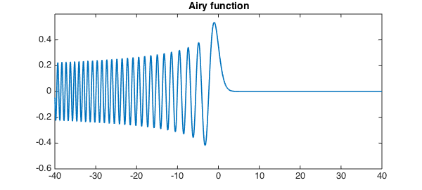
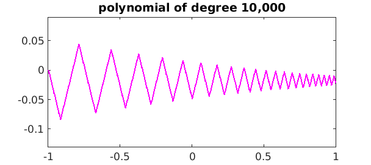
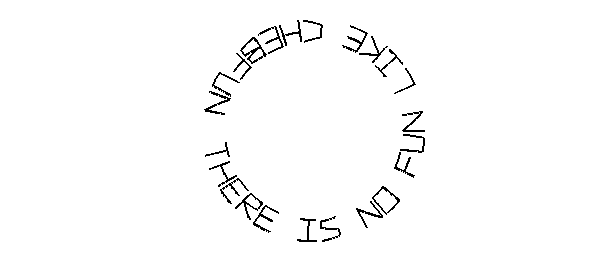
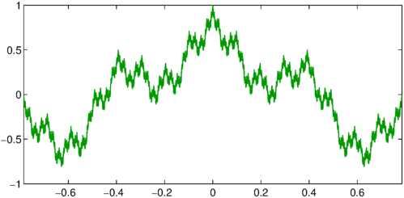
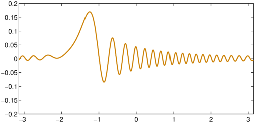

For many years MATLAB has had a gallery command to construct interesting matrices. Beginning with the release of Version 5.1 this month, Chebfun has a gallery command too, which constructs interesting functions, i.e., chebfuns. To see what's available, type help cheb/gallery.
Here is a particularly attractive image. The command
f = cheb.gallery('rose');
produces a complex chebfun f that can be visualized strikingly with fill:
fill(real(f),imag(f),[1 0 0]), axis equal off
Some gallery examples produce results so simple that a line of obvious Chebfun code would have had the same effect:
plot(cheb.gallery('airy')), ylim([-.6 .6]), title('Airy function')

(This is essentially just chebfun(@airy, [-40,40]).) Sometimes however you may know what the function looks like but need a reminder of how to generate it. Here is a polynomial of degree 10,000:
plot(cheb.gallery('zigzag'),'m'), ylim([-.13 .09])
title('polynomial of degree 10,000')

The gallery also includes a familiar Chebfun motto,
plot(cheb.gallery('motto'),'k','linewidth',1.6)
axis equal off

For periodic functions, there is also cheb.gallerytrig. (Two-dimensional functions and cheb.gallery2 are discussed in a separate Example.) For example, here is an approximation to a fractal function of Weierstrass,
plot(cheb.gallerytrig('weierstrass'),'linewidth',1,'color',[0 .6 0])

Here is a periodic example whose function is generated by solving the periodic differential equation
$$ u'' + u' + 600(1+\sin x) u = 1, \qquad x\in[-\pi,\pi] . $$
plot(cheb.gallerytrig('tsunami'),'color',[.8 .5 0]), ylim([-.2,.2])

To find details of how a gallery example is constructed, try e.g. type cheb/gallery or edit cheb/gallery. We are always glad to see interesting new examples: if you have something to suggest, please get in touch!